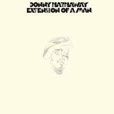

Album Review: Extension of a Man - Donny Hathaway
Extension of a Man is a soulful, emotionally rich album that feels both classic and deeply personal. Donny Hathaway’s voice carries a warm, expressive clarity that makes each track feel intimate and lived-in. The arrangements are smooth without being sleepy, and the songwriting balances heartbreak with resilience. It’s the kind of record that sounds just as strong as a full sit-down listen as it does when you drop the needle on a single track. Overall, it’s a timeless soul album with standout performances and a lot of heart.
For my three favorite songs, “Love Love Love” stands out for its tender, reflective feel, “I Know It’s You” has one of the most emotional vocal moments on the album, and “Magdalena” showcases the smooth, layered instrumentation that makes this record so memorable.